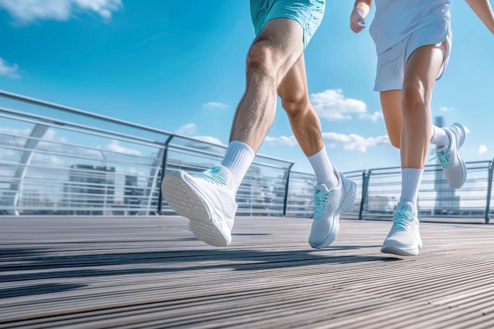

2022년 한국직업능력연구원에서 전국 성인 남녀 4,000명을 대상으로 ‘일, 가족관계, 여가생활에서 어떤 것이 가장 중요한가요?’라는 조사를 한 바 있다. 40~60대에서는 여가생활이 3위, 30대는 2위, 20대는 1위였다. 자기 삶이 행복해야 가족과 일도 만족스러울 수 있다는 가치관이 반영된 것으로 분석했다. 그렇다면, 센트럴서울안과 7인의 원장님은 진료 외 여가를 어떻게 보낼까?
김미진 원장 · 여행 · 독서 · 운동
초등학교 저학년 때 주재원이던 아버지를 따라 프랑스에서 일 년간 체류한 적이 있답니다. 책 속에서만 보던 장소를 직접 가서 보고 그 장소에 얽힌 역사와 문화를 이해하는 데서 큰 즐거움을 느꼈어요. 이후로 여행을 계획하면 미리 관련 서적을 읽으며 준비하게 되었어요. 대형서점 VIP가 괜히 된 것이 아니겠죠? 쉬는 날 틈틈이 운동하는데, 이 역시 여행의 연장선으로 체력이 있어야 여행도 가능하기 때문이랍니다.
최재완 원장 · 운동 · 자전거
웨이트 트레이닝 경력 30년 차! 의과대학 재학 중 교내 보디빌딩 대회 ‘미스터 서울대 선발대회’에 출전해 입상한 경험도 있습니다. 출퇴근길 30km 정도는 매일 자전거로 이동하며 자전거, 러닝 등 유산소 운동에 중점을 둡니다. 내년에는 120km 산악지형을 달리는 ‘그란폰도’ 대회와 보디빌딩 또는 피트니스 대회 출전을 목표로 차근차근 준비 중!
황영훈 원장 · 독서
진부한 표현일 수 있지만, 책에 모든 길이 있습니다. 『논어』, 『도덕경』, 『채근담』에서 지혜를 배우고 비슷한 길을 걷는 의사들의 책에서는 가르침을 얻습니다. Jerome Groopman의 『닥터스 씽킹(How Doctors Think)』, Laurence A. Savett의 『차가운 의학, 따뜻한 의사(The Human Side of Medicine)』는 매너리즘에 빠지기 쉬운 상황에서 계속 성찰할 수 있도록 돕는 훌륭한 책이지요. 베토벤을 좋아해서 베토벤에 관한 책도 가깝게 즐깁니다.
김균형 원장 · 경제 공부 · 투자
틈틈이 경제를 공부하고 관련 뉴스도 봅니다. ‘경제 공부와 투자’는 세상 흐름을 가장 먼저 알게 되고, 세상에 관심을 가지게 합니다. 투자는 장기적 안목으로! 그리고 저의 원동력과 같은 와인을 빼놓을 수 없는데요. 와인이란 곧 추억이 깃든 음식 같은 존재입니다.
송민혜 원장 · 골프
처음 시작할 때는 재미도 흥미도 크지 않았던 골프였지만, 아들이 자라면서 함께 골프를 치게 되었습니다. 아들 실력이 향상하는 것을 보면 뿌듯한 엄마의 마음과 동시에 자극을 받아 더 열심히 하게 되었죠. 여행 중 골프 일정을 더하면 가족여행 추억이 더 풍성해지는 듯합니다.
황종욱 원장 · 테니스
건강한 몸 상태를 유지하기 위해 일주일에 최소 2회 이상 테니스를 비롯한 운동하기를 원칙으로 삼고 있습니다. 테니스는 근력 강화뿐 아니라 정신을 단련하는 장점이 있어 신체, 정신, 정서적 스트레스를 극복하는 능력이 향상됩니다.
유애리 원장 · 걷기
걷기의 즐거움, 혹시 아시나요? 저는 계절의 변화를 느끼며 걷는 것을 즐겨요. 집 앞 탄천길을 주로 이용하고, 여유가 있는 날은 남산으로 향합니다. 남산 둘레길 한 바퀴는 한 시간 반 정도 소요되는 코스인데, 가을날 걷기 너무 좋아요. 올가을은 주말마다 남산행이었다는 건 안 비밀!